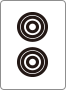
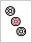
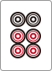
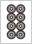
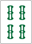
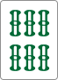
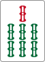

1. 複合形は分解して受け入れを合わせる
連続形は順子とターツがくっついた5枚形。8枚ほどがつながって見えても、端から端まですべて受け入れとは限らない。    

 、1つずらしたは
、1つずらしたは
8/22 ねじまき鳥先生
連続形は順子とターツがくっついた5枚形。8枚ほどがつながって見えても、端から端まですべて受け入れとは限らない。    、1つずらしたは

2面子型では面子になる牌を探すが、和了形に必要な雀頭が残ることを必ず確認する。また、    のはカン受けを増やす。同じように見える形でも、実際に引いて分解してみると役割が違う。
のはカン受けを増やす。同じように見える形でも、実際に引いて分解してみると役割が違う。
形の見た目だけで答えを暗記せず、面子・ターツ・雀頭を確認する。ヘッドレス1型と2型は連続形の有無ではなく、ターツが1つか2つかで区別する。答えと一緒に「なぜその牌が受け入れになるか」を説明することが授業の中心。
このポイントをYouTubeで確認くっつきは孤立牌の前後2つと雀頭の刻子化が基本。順子スキップや亜両面では、基本範囲の外に受け入れが増える。待ちから始まる順子がつく場合と、単騎待ちの隣から始まる順子がつく場合を分けて理解する。
このポイントをYouTubeで確認基本は、順子に近づくほど強く、ターツに近づくほど弱い。ただし134や124の1のように1手で4連形になる形は例外。一手先フォロー牌は、2種類以上のツモでフォロー牌になることが条件で、孤立2/8より強い。単に順子のそばというだけで、すべての1/9が2/8を上回るわけではない。
このポイントをYouTubeで確認正解をなぞるだけでなく、取り違えた形・見落とした受け入れ・比較基準を一つずつ説明する。細かい序列の微差は、距離などの大原則と分けて覚える。
このポイントをYouTubeで確認